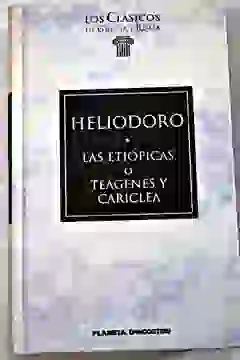
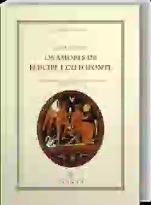
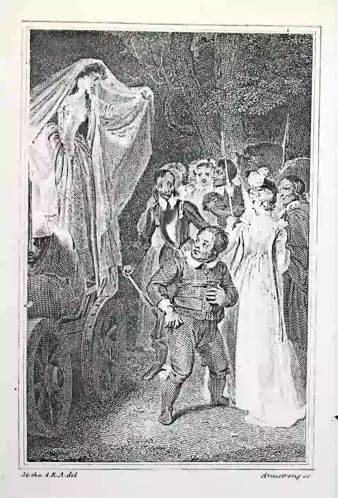

La novela bizantina, también conocida como novela griega, es un subgénero de la narrativa que surgió en la época bizantina (siglos IV a XV d.C.) y alcanzó gran popularidad durante el Renacimiento. Estas obras se caracterizan por sus tramas complejas y enrevesadas, llenas de aventuras, amoríos apasionados, secuestros, viajes exóticos y escenarios deslumbrantes. Los protagonistas, generalmente jóvenes nobles, se enfrentan a una serie de obstáculos y pruebas para alcanzar el amor verdadero y la felicidad.
♉Las novelas bizantinas presentan tramas intrincadas con múltiples personajes, giros inesperados y cambios de fortuna. La acción se desarrolla a lo largo de extensos viajes y peripecias, manteniendo al lector en constante suspense.
♉El amor es el tema central de este género, y se presenta de forma idealizada y cortés. Los protagonistas se enamoran perdidamente y deben superar numerosos obstáculos para poder estar juntos. La fidelidad, la constancia y el sacrificio son valores fundamentales en estas historias de amor.
♉Las novelas bizantinas están llenas de aventuras emocionantes. Los personajes se enfrentan a secuestros, naufragios, batallas, robos y otros peligros. La acción se desarrolla en lugares exóticos y lejanos, como islas paradisíacas, desiertos áridos o ciudades opulentas.
♉Los escenarios y las descripciones en las novelas bizantinas son muy exóticas y detalladas. Los autores se esmeran en crear atmósferas vívidas y transportar al lector a mundos lejanos y fascinantes. Esto se refleja en la descripción de paisajes, costumbres, vestimentas y arquitectura de las culturas que se representan.
♉Las novelas bizantinas tuvieron una gran influencia en el desarrollo de la narrativa occidental. Su estilo complejo y sus historias apasionantes inspiraron a autores como Miguel de Cervantes y William Shakespeare.
| Nombre de la obra y Año de publicación | Autor | De qué trata | Imagen |
|---|---|---|---|
| Historia de Teágenes y Cariclea (siglo II d.C.) | Heliodoro de Émesa | Teágenes y Cariclea se enamoran perdidamente durante un festival religioso en Delfos. Sin embargo, su amor se ve amenazado por la oposición de sus familias y una serie de desventuras. Cariclea es secuestrada por piratas y vendida como esclava, mientras que Teágenes es capturado por bandidos. A pesar de las dificultades, ambos logran superar los obstáculos y finalmente se reúnen y se casan. |  |
| Los amores de Leucipe y Clitofón (siglo III d.C.) | Aquiles Tacio | Leucipe y Clitofón se conocen en la infancia y se enamoran profundamente. Sin embargo, su amor se ve obstaculizado por las diferencias de clase social. Leucipe es prometida en matrimonio con un hombre rico, mientras que Clitofón es vendido como esclavo. A pesar de las dificultades, ambos logran superar los obstáculos y finalmente se reúnen y se casan. |  |
| La Ninfa Enamorada (1582) | Miguel de Cervantes | Niseo, un pastor, se enamora perdidamente de la ninfa Leandra. Sin embargo, su amor se ve amenazado por la oposición de la diosa Diana y las intrigas de un rival. Niseo se embarca en una serie de aventuras para superar estos obstáculos y estar con Leandra. |  |
https://lacuevademontesinos.wordpress.com/2020/04/21/la-novela-bizantina/
https://www.lifeder.com/novela-bizantina/
https://es.scribd.com/document/372308889/La-Novela-Bizantina